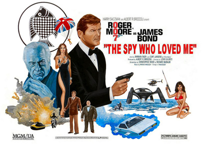
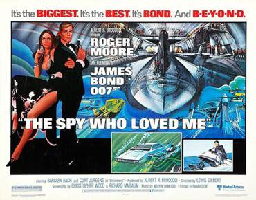
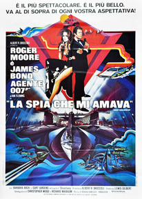
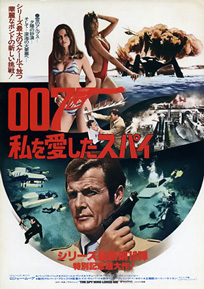
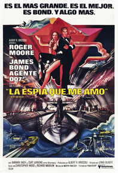
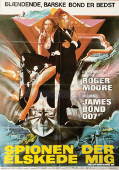
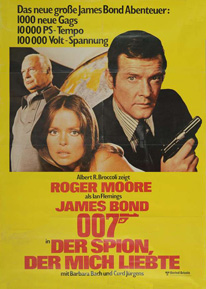
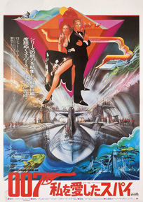

Christopher Wood
Richard Maibaum
Commander Talbot: Captain of the captured British submarine (HMS Ranger).
British and Soviet ballistic-missile submarines are mysteriously disappearing. James Bond is summoned to investigate. On the way to his briefing, Bond escapes an ambush by Soviet agents in Austria, killing their leader during a downhill ski chase. The plans for a highly advanced submarine tracking system are being offered in Egypt. There, he encounters Major Anya Amasova - KGB agent Triple X - his rival to recover the microfilm plans. They travel across Egypt together, encountering Jaws (a tall assassin with razor-sharp steel teeth) along the way. Bond and Amasova reluctantly join forces after a truce is agreed by their respective British and Soviet superiors. They identify the person responsible for the thefts as the shipping tycoon and scientist Karl Stromberg.
While travelling by train to Stromberg's base in Sardinia, Bond saves Amasova from Jaws, and their cooling rivalry turns to affection. Posing as a marine biologist and his wife, they visit Stromberg's base and discover that he had launched a mysterious new supertanker, the Liparus, nine months previously. As they leave the base, a henchman on a motorcycle featuring a rocket sidecar, Jaws in a car and Naomi, an assistant/pilot of Stromberg in an attack helicopter, chase them, but Bond and Amasova escape underwater when his car - a Lotus Esprit from Q Branch - converts into a submarine. Jaws survives a car crash and Naomi is killed when Bond fires a sea-air missile from his car which destroys her helicopter. While examining Stromberg's underwater Atlantis base, the pair confirm that he is operating the stolen tracking system and encounter a fleet of Stromberg's mini-subs which Amasova obliterates by launching mines. Bond finds out that the Liparus has never visited any known port or harbour. Amasova discovers that Bond killed her lover (as shown at the beginning of the movie), and she vows to kill Bond as soon as their mission is complete.
Bond and Amasova board an American submarine to examine the Liparus as it captures the submarine. Stromberg sets his plan in motion: the simultaneous launching of nuclear missiles from British and Soviet submarines to destroy Moscow and New York City. This would trigger a global nuclear war, which Stromberg would survive in Atlantis, and subsequently a new civilisation would be established underwater. He leaves for Atlantis with Amasova. Bond escapes and frees the captured British, Russian and American sailors and they battle the Liparus's crew. Bond reprograms the submarines to fire missiles at each other, saving Moscow and New York City. The victorious submariners escape the sinking Liparus on the American submarine.
The submarine is ordered to destroy Atlantis but Bond insists on rescuing Amasova first. He confronts and kills Stromberg but again encounters Jaws, whom he drops into a shark tank. However, Jaws kills the shark and escapes. Bond and Amasova flee in an escape pod as Atlantis is sunk. Amasova picks up Bond's gun and reminds him that she has vowed to kill him, but then decides not to and the two embrace. The Royal Navy recovers the pod and the two spies are seen in an intimate embrace through its port window, much to the bemusement of their superiors on the ship.
Curt Jürgens' casting was a suggestion of director Lewis Gilbert, who had worked with him before on the 1959 film Ferry to Hong Kong where he famously battled with Orson Welles.
Barbara Bach was cast only four days before principal photography began, and performed her audition expecting just a role in the film, not one of the protagonists. She was considered by critic James Berardinelli of Reelviews to be an ideal Bond girl – "attractive, smart, sexy, and dangerous".
Critic Danny Peary felt that Roger Moore "gives his best performance in the series ... [and Bond and Anya Amasova] are an appealing couple, equal in every way". .
Tom Mankiewicz claims that Catherine Deneuve wanted to play the female lead and was willing to cut her normal rate from $400,000 per picture to $250,000, but Albert Broccoli would not pay above $80,000.
The Spy Who Loved Me in many ways was a pivotal film for the Bond franchise, and was plagued since its conception by many problems. The first was the departure of Bond producer Harry Saltzman, who was forced to sell his half of the Bond film franchise in 1975 for £20 million. Saltzman had branched out into several other ventures of dubious promise and consequently was struggling through personal financial reversals unrelated to Bond. This was exacerbated by the twin personal tragedies of his wife's terminal cancer and many of the symptoms of clinical depression in himself.
Another troubling aspect of the production was the difficulty in obtaining a director. The producers approached Steven Spielberg, who was in post-production of Jaws, but ultimately decided against him. The first director attached to the film was Guy Hamilton, who directed the previous three Bond films as well as Goldfinger, but he left after being offered the opportunity to direct the 1978 film Superman, although Richard Donner took over the project. Eon Productions later turned to Lewis Gilbert, who had directed the earlier Bond film You Only Live Twice.
With a director finally secured, the next hurdle was finishing the script, which had gone through several revisions by numerous writers. The initial villain of the film was Ernst Stavro Blofeld; however Kevin McClory, who owned the film rights to Thunderball forced an injunction on Eon Productions against using the character of Blofeld, or his international criminal organisation, SPECTRE, which delayed production of the film further. The villain was later changed from Blofeld to Stromberg so that the injunction would not interfere with the production. Christopher Wood was later brought in by Lewis Gilbert to complete the script. Although Fleming had requested that no elements from his original book be used, the film characters of Jaws and Sandor are based on the novel characters Sol Horror and Sluggsy Morant, respectively. Horror is described as having steel-capped teeth, while Sluggsy had a clear bald head.
The film was shot at the Pinewood Studios in London, Porto Cervo in Sardinia (Hotel Cala di Volpe), Egypt (Karnak, Mosque of Ibn Tulun, Gayer-Anderson Museum, Abu Simbel temples), Malta, Scotland, Hayling Island UK, Okinawa, Switzerland and Mount Asgard on Baffin Island in the then northern Canadian territory of Northwest Territories (now located in Nunavut).
As no studio was big enough for the interior of Stromberg's supertanker, and set designer Ken Adam did not want to repeat what he had done with SPECTRE's volcano base in You Only Live Twice - "a workable but ultimately wasteful set" - construction began in March 1976 of a new sound stage at Pinewood, the 007 Stage, at a cost of $1.8 million. To complement this stage, Eon also paid for building a water tank capable of storing approximately 1,200,000 gallons (5.5 million litres). The soundstage was so huge that cinematographer Claude Renoir found himself unable to effectively light it due to his deteriorating eyesight, and so Stanley Kubrick visited the production, in secret, to advise on how to light the stage. For the exterior, while Shell was willing to lend an abandoned tanker to the production, the elevated insurance and safety risks caused it to be replaced with miniatures built by Derek Meddings' team and shot in the Bahamas. Stromberg's shark tank was also filmed in the Bahamas, using a live shark in a saltwater swimming pool. Adam decided to do experiments with curved shapes for the scenery, as he felt all his previous setpieces were "too linear". This was demonstrated with the Atlantis, which is a dome and curved surfaces outside, and many curved objects in Stromberg's office inside. For Gogol's offices, Adam wanted an open space to contrast M's enclosed headquarters, and drew inspiration from Sergei Eisenstein to do a "Russian crypt-like" set.
The main unit began its work in August 1976 in Sardinia. Don McLaughlan, then head of public relations at Lotus Cars, heard that Eon were shopping for a new Bond car. He drove a prototype Lotus Esprit with all Lotus branding taped over, and parked it outside the Eon offices at Pinewood studios; on seeing the car Eon asked Lotus to borrow both of the prototypes for filming. Initial filming of the car chase sequence resulted in disappointing action sequences. While moving the car between shoots, Lotus test driver Roger Becker impressed with his handling of the car and for the rest of filming on Sardinia, Becker became the stunt driver.
The motorcycle sidecar missile used in one chase sequence was built by film staff at Pinewood and used a standard Kawasaki Z900 and a custom made sidecar outfit. The sidecar was made large enough so that a stuntman could lie flat inside. It had two 10 inch scooter wheels on each side, a Suzuki 185 engine and the detached projectile was steered through a small solid rubber wheel at the front. A heavily smoked perspex nose allowed the stuntman sufficient visibility to steer the device whilst being entirely hidden from view. A pincer type lock held the sidecar in place until operated by the pilot via a solenoid switch. The sequences involving the outfit were speeded up as the weight of the sidecar made the outfit very difficult to control.
In October, the second unit travelled to Nassau to film the underwater sequences. To perform the car becoming a submarine, seven different models were used, one for each step of the transformation. One of the models was a fully mobile submarine equipped with an engine built by Miami-based Perry Submarines. The car seen entering the sea was a mock-up shell, propelled off the jetty by a compressed air cannon. During the model sequences, the air bubbles seen appearing from the vehicle were created by Alka-Seltzer tablets.
In September, production moved to Egypt. While the Great Sphinx of Giza was shot on the location, lighting problems caused the pyramids to be replaced with miniatures. While construction of the Liparus set continued, the second unit headed by John Glen departed for Mount Asgard where, in July 1976, they staged the film's pre-credits sequence. Bond film veteran Willy Bogner captured the action, staged by stuntman Rick Sylvester, who earned $30,000 for the stunt. This stunt cost $500,000 – the most expensive single movie stunt at that time. Additional scenes for the pre-credits sequence were filmed in the Bernina Range in the Swiss alps.
The production team returned briefly to the UK to shoot at the Faslane submarine base before setting off to Spain, Portugal and the Bay of Biscay where the supertanker exteriors were filmed. On 5 December 1976, with principal photography finished, the 007 Stage was formally opened by former Prime Minister Harold Wilson.







